0、前言
在上一篇文章自动化博客(1)–账号创建中，我们已经完成了GitHub账号的创建并且成功创建了两个仓库用来存放相关的文件或源代码：
| 仓库 | 属性 | 用途 |
|---|---|---|
| myblog | private | 存放博客源码 |
| username.github.io | public | 存放自动化生成的博客页面 |
在本章中，我们将完成基本博客写作环境的搭建。
1、Git 安装与相关配置
1、下载并安装git工具
1、登录git官网下载 git
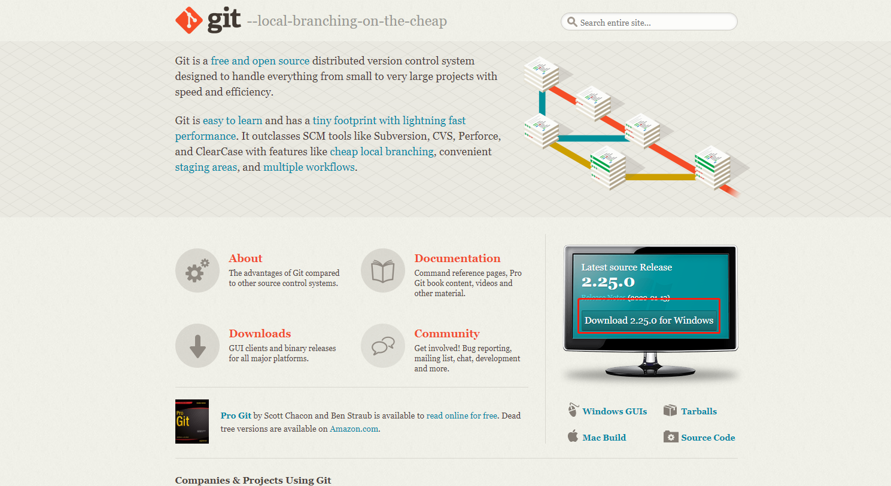
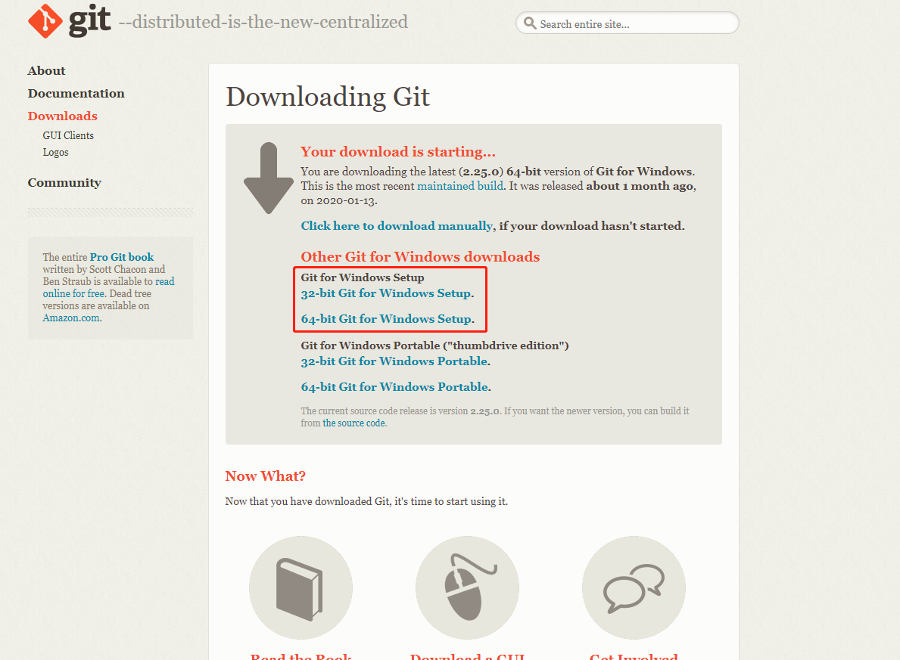
本人认为，现在几乎每个人手里的windows系统都是64位的，所以我们直接选择64-bit Git for Windows Setup.，下载项即可，若你是32位系统，请选择32-bit Git for Windows Setup.；如何确认自己的系统位数，请自行百度。安装成功后，在桌面鼠标右键单击将会看见下图所示的状态，即为安装成功；安装过程省略，若你需帮助可联系鄙人。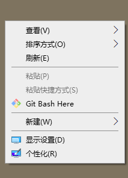
2、生成ssh密钥
Git安装完成之后，需要做最后一步配置，如果你没做这项配置，是没有ssh公私密钥对的，然而上传代码到远程的github等仓库，是需要验证是不是你本人亲自上传的，所以我们配置并生成一下
配置用户信息，win+R输入cmd，在弹出的黑窗口中输入如下内容：
git config --global user.name "用户名" git config --global user.email "你的邮箱"虽然用户名和邮箱均可以自我选择，但鄙人建议与github注册时使用的用户名和邮箱保持一致。
生成 ssh 公私密钥对,win+R输入cmd，在弹出的黑窗口中输入如下内容：
ssh-keygen -t rsa -C "你的邮箱"然后三次回车键，如下图所示：
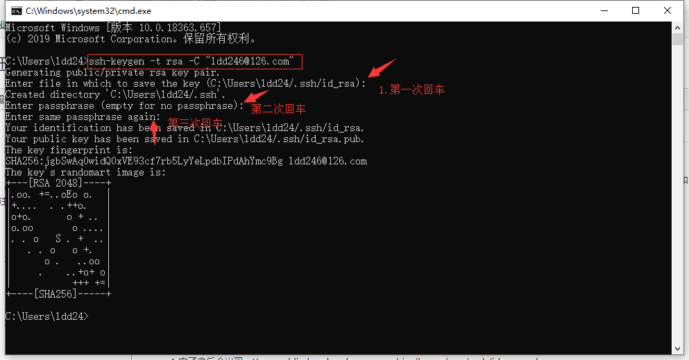
在下面的文件路径：C:\Users\你的电脑用户名\.ssh\下，将会出现如下图所示的一组密钥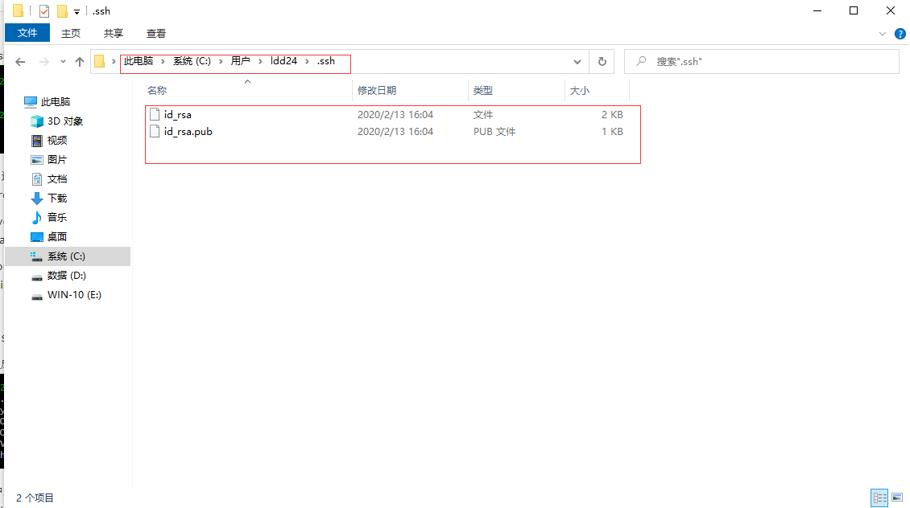
文件名 文件描述 id_rsa ssh私钥,不可以泄露给其他人 id_rsa.pub ssh公钥,后面一步将配置到github网站中
3、在github配置与验证ssh密钥
使用文本编辑器打开id_rsa.pub文件并复制其中的内容；
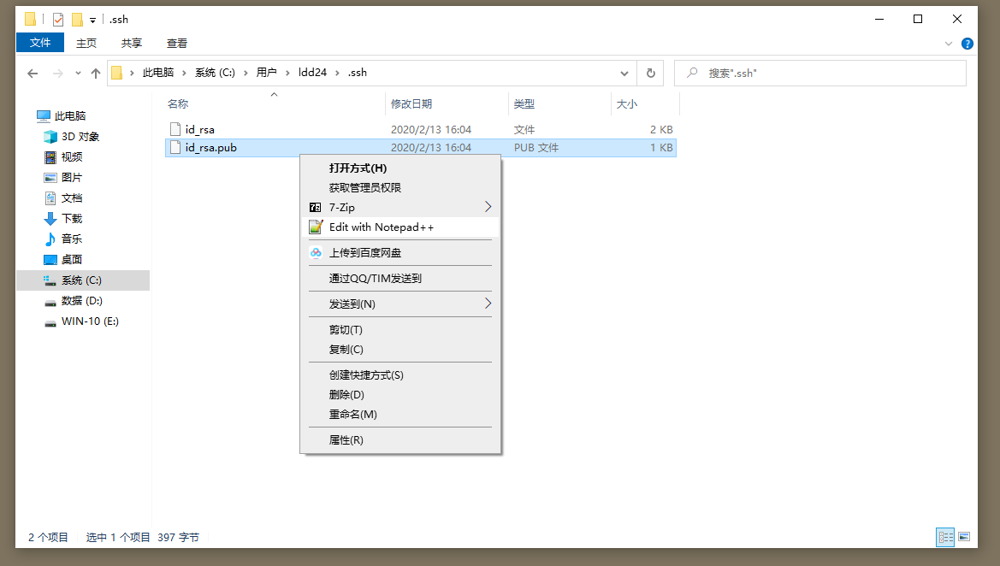
打开github添加密钥页面,添加ssh公钥，如下面的图片所示进行操作:
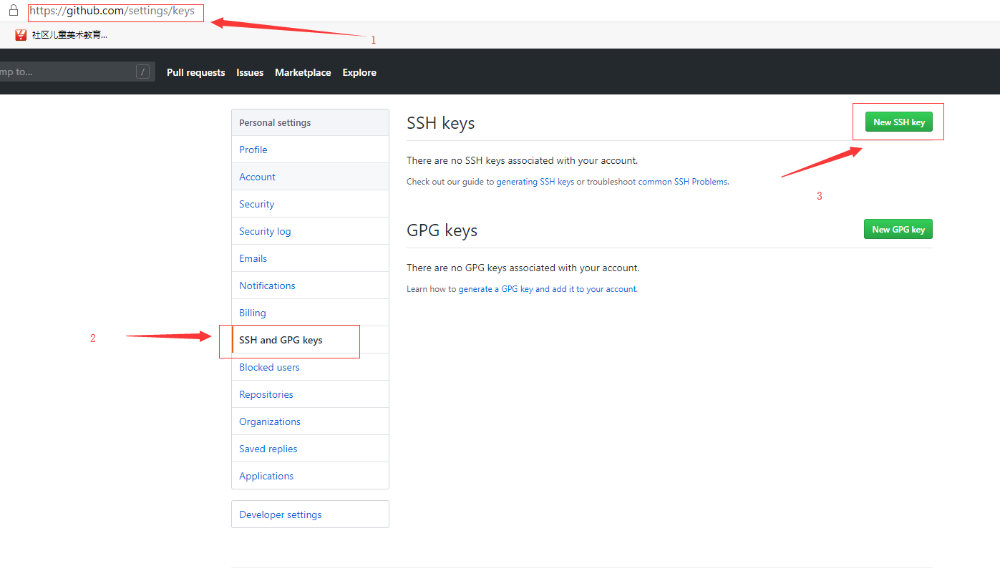
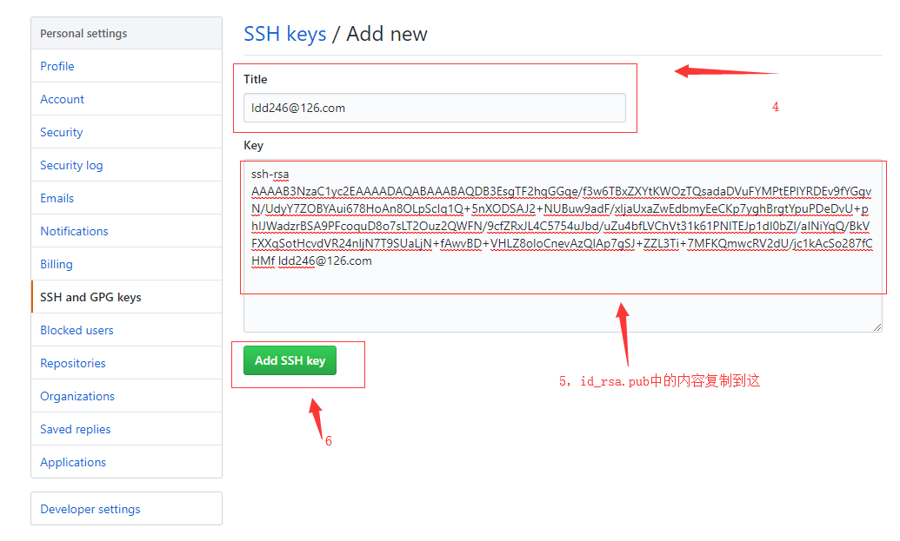
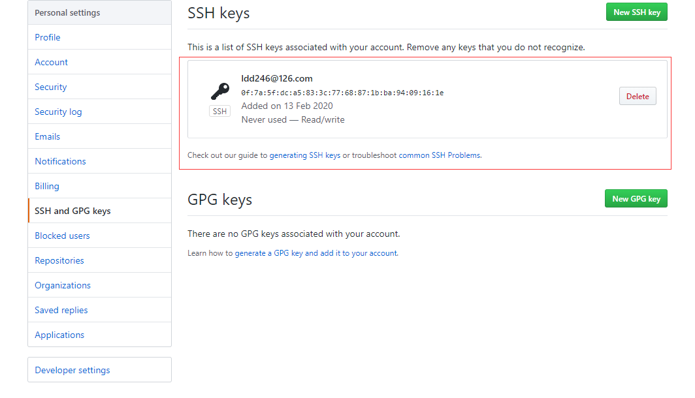
验证ssh密钥配置是否成功
win+R输入cmd，在弹出的黑窗口中输入如下内容：ssh git@github.com中途会有一个确认问题，我们输入yes即可，当看见如下字样即配置成功
Hi 。。。。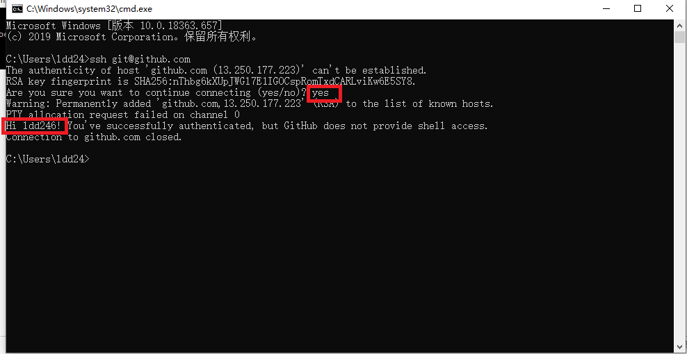
2、nodejs安装与配置
1、下载并安装nodejs工具
1、登录nodejs官网下载 nodejs
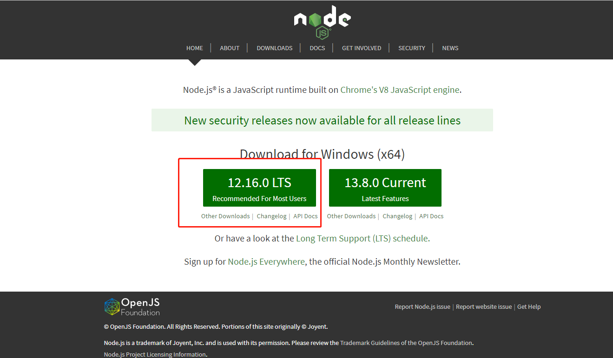
2、验证nodejs安装成功
执行命令node -v 与命令npm -v；见到如下图所示结果，即为安装成功！
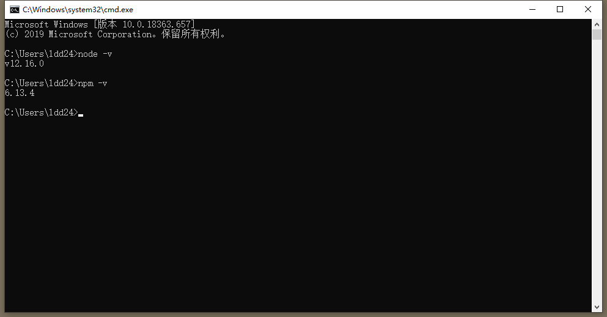
3、安装hexo
执行命令：npm install -g hexo，如下图所示：
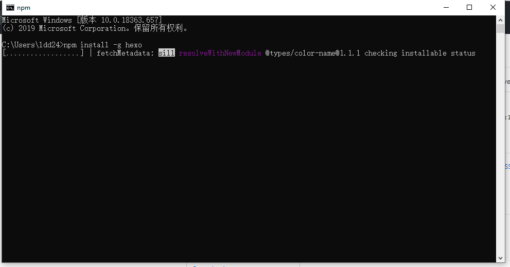
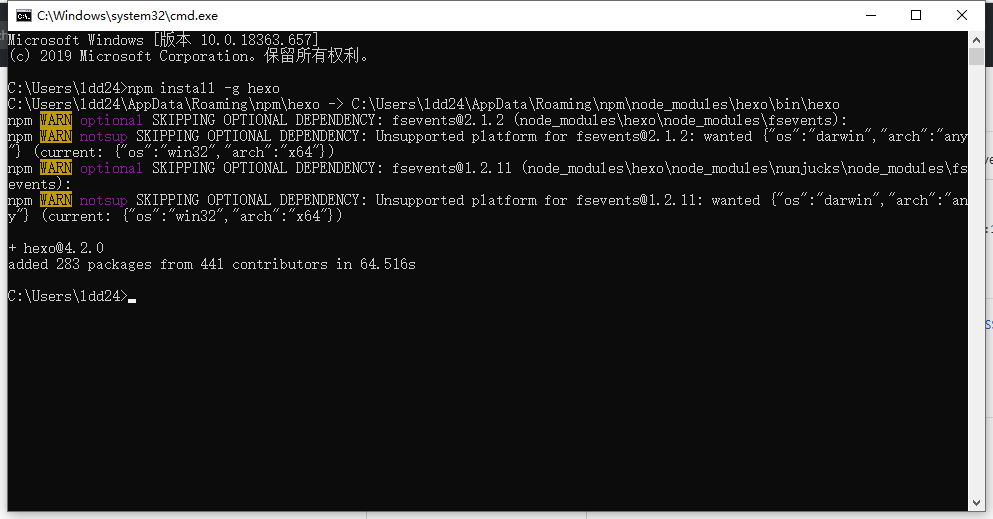
3、myblog源码生成与预览博客
1、克隆myblog仓库到本地
打开github，找到myblog仓库，并按照下图，复制出仓库的地。
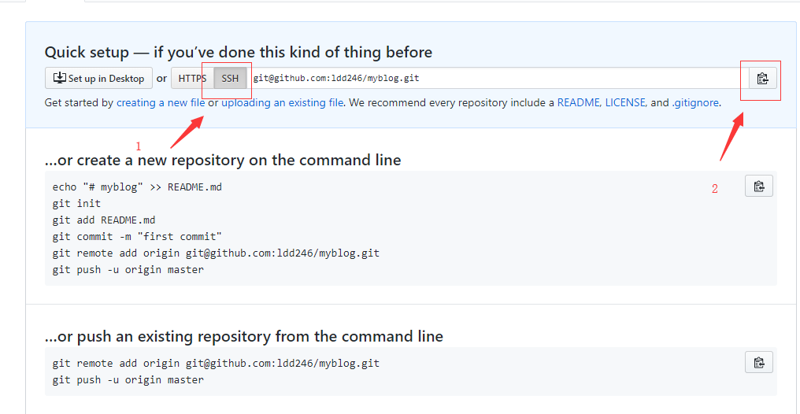
克隆仓库，选择一个专门存放博客的文件夹（最好不要有中文名）然后单击鼠标右键，选择Git Bash Here然后输入git clone，如下所示
git clone git@github.com:yourname/myblog.git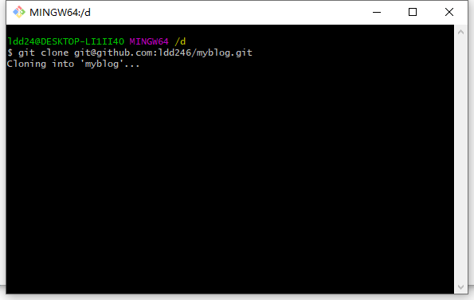
2、生成myblog初始化源码
另外找一个空的文件夹，执行命令：hexo init myblog，生成源码文件
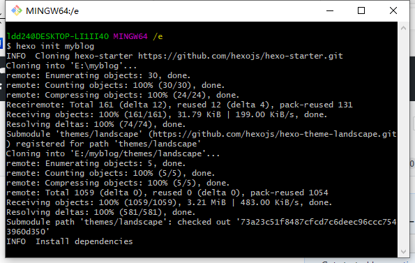
将生成的所有文件，复制到克隆下来的仓库文件夹中；文件目录结构如下图所示
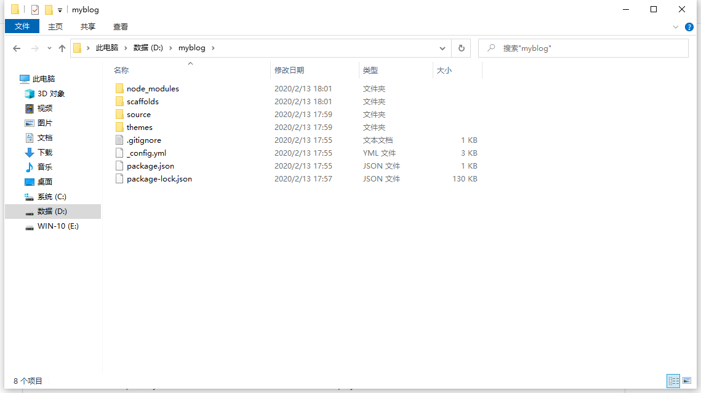
文件/文件夹 说明 _config.yml 配置文件 scaffolds 一些通用的markdown模板 source 编写的markdown文件，_drafts草稿文件，_posts发布的文章 themes 博客的主题模板 .gitignore Git提交忽略文件列表 package.json hexo模块的描述文件 package-lock.json 记录当前状态下实际安装的各个npm package的具体来源和版本号。 node_modules 模块下载时存储的文件
3、预览博客
进入目录中，执行命令hexo server或者hexo s，将会出现如下图所示
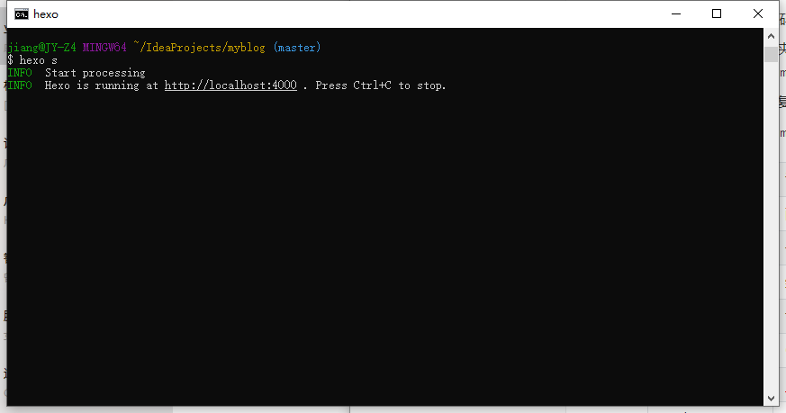
浏览器打开网址：http://localhost:4000 进行博客预览，不出意外则会如下图所示的默认博客页面：
4、总结
本篇文章中，我们搭建了基础的博客环境并初始化了默认的博客源码；到此处我们要实现的功能已经完成了40%；还剩下的内容有：
- 博客的基础内容的个性化配置；
- 选择一个自己喜欢的主题；
- 实现博客的自动化发布等等。
转载请注明来源，欢迎对文章中的引用来源进行考证，欢迎指出任何有错误或不够清晰的表达。可以在下面评论区评论，也可以邮件至 jiang4yu@126.com